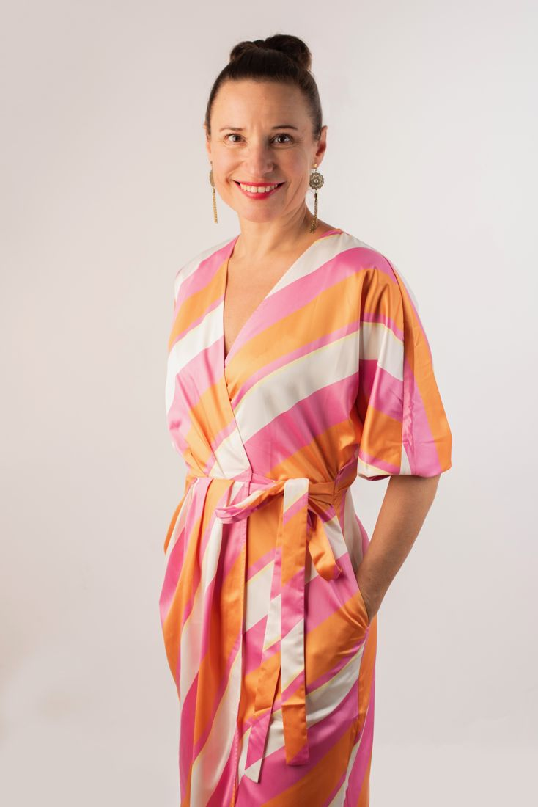

Erfarenhet
20 år i ledarroller gör att jag förstår din verklighet på riktigt.
Om Funda
Chef i 20 år, diplomerad ICF-coach och certifierad yogalärare. I dag hjälper jag människor och organisationer att prestera utan att tappa energin.

Min historia
Jag har arbetat som chef inom IT-konsultbranschen i cirka 20 år. Jag har upplevt det mesta: budgetar som ska hållas, team som ska motiveras och beslut som skaver även efter arbetsdagens slut.
Jag är övertygad om att produktivitet och välmående förstärker varandra. När vi mår bra och upplever mening fattar vi bättre beslut, blir mer kreativa och bryr oss mer om andra.
Vi spenderar en tredjedel av våra vakna liv på jobbet. Jag startade Virya för att bidra till ledare och organisationer som jobbar på ett sätt som gör att vi har energi kvar i både kroppen och knoppen när arbetstimmarna är slut.
Det du får
20 år i ledarroller gör att jag förstår din verklighet på riktigt.
Diplomerad ICF-coach – en professionell process med både framdrift och reflektion.
Certifierad yogalärare med fokus på nervsystemsreglering och återhämtning.
Namnet
Virya kommer från sanskrit och betyder energi. Den energi du har med dig i varje möte påverkar andra. Energin är kraften som initierar och skapar – och ibland förstör, om den inte används på rätt sätt.
Namnet är en påminnelse om att vara medveten om den energi vi kommer med, och att vi behöver vara rädda om den energi vi har.
Själv hittar jag mycket inspiration i idrotten och framför allt i acroyogan, där misstag snabbt blir lärande.
Kundröster
”Funda lyssnar in, utmanar och sitter på ett stort kapital av empati. Jag kom ur coachingen med otroligt många nyttiga insikter för framtiden.”
Magnus, 42 – chefscoaching
”Det här har varit mer värdefullt än något annat i mitt liv. Jag mår bättre än jag gjort på länge och gör mer medvetna val över var jag lägger min energi.”
Maria, 52
”Det bästa du gav mig var din tro på mig och att du såg något som jag inte själv såg och kunde putta mig i rätt riktning.”
Jens Wedin, Seventy One Consulting
Boka ett kostnadsfritt samtal – för dig själv, ditt ledarskap eller din organisation.